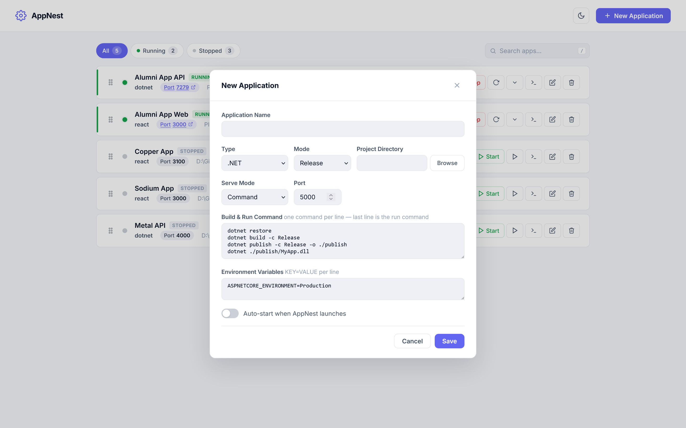

One-click build & run
Add a project, pick its type, hit Start. Build steps and run command execute automatically — every time.
AppNest is a developer productivity tool for managing local web applications. Start, stop, monitor and stream logs for .NET, Node.js, React, Angular, Vue, Express — all from a single lightweight dashboard. No Docker. No runtime. No config files.
No YAML, no Docker, no daemon. Just a 2 MB executable and a beautiful dashboard at http://localhost:1234.
Add a project, pick its type, hit Start. Build steps and run command execute automatically — every time.
Host as many apps as you want on different ports — simultaneously — from a single place.
SSE-powered logs with ANSI colors, clickable URLs, timestamps, in-log search, follow mode, and error highlighting.
.NET, Node, React, Next, Angular, Vue, Express — pre-configured with sensible defaults. Add your own in presets.json.
Serve build/ or dist/ output for React, Angular, Vue with SPA fallback. No npx serve needed.
Ctrl/Cmd+K opens a fuzzy launcher for every app and action. Keyboard-driven by design.
Live uptime per app, port chip opens the URL (left-click) or copies it (right-click). PID shown for quick attach.
Indigo accent with a proper dark mode. Theme persists across launches and respects your OS preference.
Runs in the background. Start All, Stop All, or Quit straight from the tray. macOS & Linux tray on the way.
Flag any app to spin up automatically when AppNest launches. Reboot → full stack ready.
Arrange your apps in the order that makes sense for your workflow. Order is persisted.
Jump from the logs modal straight into Explorer or your native terminal — Windows Terminal, PowerShell, macOS Terminal, or your Linux emulator.
Filter chips, fuzzy search, live status, inline log preview, and a one-click logs modal for every app.

Grab the binary for your OS. No installer, no admin rights. Double-click — the dashboard opens at http://localhost:1234.
Click New Application, pick a preset (.NET, Node, React, …), browse to your project folder. All fields are pre-filled.
AppNest runs your build steps, then your run command. Watch live logs stream in. Open the URL with one click.
Add as many apps as you need. Mark the ones you want to auto-start. Close your laptop — tomorrow it's all there again.
AppNest optimizes for developer speed on your own machine. Use Docker for production, CI, and reproducible environments — and use AppNest for everything else.
No installer. No runtime. App data lives under your user profile and never leaves your machine.
Ctrl+C to quit). Please
open an issue
for anything that breaks.
The full FAQ — including all the hard "why not Docker?" questions — lives in the README.
Docker virtualizes an entire OS layer; AppNest is a lightweight process manager that runs your apps as native processes with zero abstraction overhead. There's no image to build, no daemon to keep running. You double-click an exe and your apps are live.
For local inner-loop development, often yes. For production, CI, reproducible environments, and disposable database images — no. Use both. They solve different problems.
AppNest itself uses ~10–15 MB of RAM — it's a native Rust binary with an embedded web UI. Compare to Docker Desktop's 1–4 GB baseline before you even start a container.
Yes — AppNest runs your apps natively, so whatever hot-reload your framework provides (Vite HMR, dotnet watch, nodemon) just works. No volume mounts, no filesystem event forwarding.
They just work. Your build commands inherit your existing authentication — .npmrc, nuget.config, credential providers, env vars — exactly the same as running from a terminal. No secret juggling.
No. AppNest binds exclusively to 127.0.0.1. The OS rejects all external connections. Other machines on your LAN cannot reach it.
No. AppNest is a desktop tool with a GUI, system tray, and file dialogs. It's designed for developer workstations. For CI/CD, use Docker, shell scripts, or your CI platform's native tooling.
Locally. Configurations live in %APPDATA%\AppNest\apps.json (or the platform equivalent), logs in %APPDATA%\AppNest\logs\. Nothing is sent to the cloud. Ever.
Aspire is a .NET-first orchestration framework with service discovery and OpenTelemetry. PM2 is Node-only. AppNest is a framework-agnostic process manager with a web dashboard and a 2 MB footprint — no SDK requirement, no DSL, no language coupling.
One app to build, host, and watch them all.